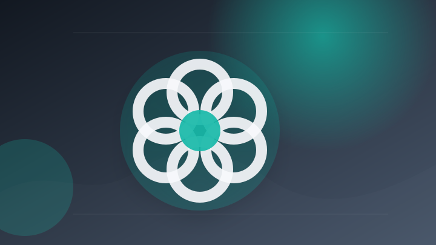
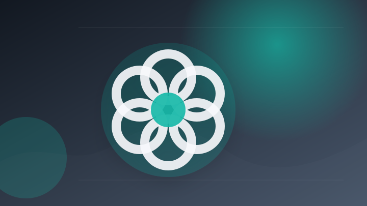
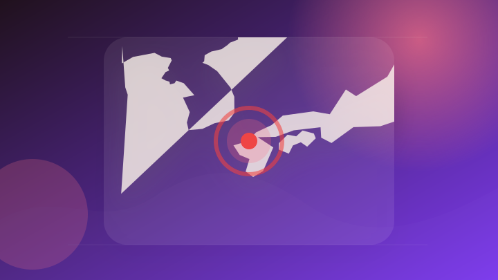
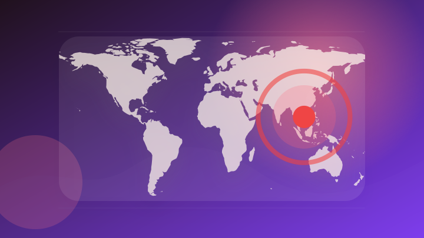
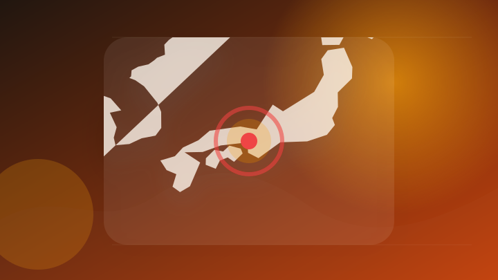
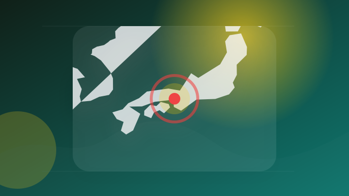
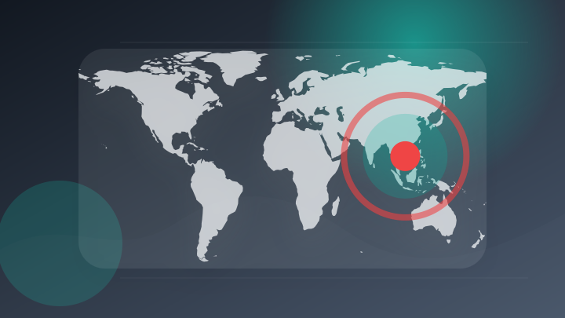

AI
3 topics
GoogleのGemini Enterprise Agent Platform、企業向けAIガバナンスを前面に OpenAIはエージェント課金を開始 - 財経新聞
GoogleのGemini Enterprise Agent Platform、企業向けAIガバナンスを前面に O…
- 注目ポイント
- OpenAI・Google・開始｜注目度 25点｜出典: 財経新聞
- 見るべきポイント
- 誰に影響するか、いつから変わるか、報道元が示す具体的な根拠を確認。

[写真]GPT-5.6 Solのデータ削除事故、OpenAI文書は破壊的動作率6.3倍を事前に示していた - 財経新聞
[写真]GPT-5.6 Solのデータ削除事故、OpenAI文書は破壊的動作率6.3倍を事前に示していた 財経新聞
- 注目ポイント
- OpenAI・事故｜注目度 25点｜出典: 財経新聞
- 見るべきポイント
- 発生場所と時刻、警察・消防など公的機関の発表、続報で変わった点を確認。

OpenAIはシンガポールでの従業員数を拡大する。 - Vietnam.vn
OpenAIはシンガポールでの従業員数を拡大する。 Vietnam.vn
- 注目ポイント
- OpenAI｜注目度 25点｜出典: Vietnam.vn
- 見るべきポイント
- 誰に影響するか、いつから変わるか、報道元が示す具体的な根拠を確認。
IT業界
3 topics
トップ20 企業 グローバル災害復旧サービス(DRaaS)市場規模 - Spherical Insights
トップ20 企業 グローバル災害復旧サービス(DRaaS)市場規模 Spherical Insights
- 注目ポイント
- 復旧・災害｜注目度 34点｜出典: Spherical Insights
- 見るべきポイント
- 対象地域、発生・更新時刻、自治体や気象機関の最新情報を確認。
GPT-5.6が発見したクリティカルなWordPressの脆弱性、研究者によると - Unite.AI
GPT-5.6が発見したクリティカルなWordPressの脆弱性、研究者によると Unite.AI
- 注目ポイント
- 脆弱性・AI｜注目度 34点｜出典: Unite.AI
- 見るべきポイント
- 対象製品・バージョン、利用可能時期、影響範囲と必要な対応を確認。
Moonshot AIが新規申込みを一時停止すると発表、Kimi K3への需要が急増 - Межа. Новини України.
Moonshot AIが新規申込みを一時停止すると発表、Kimi K3への需要が急増 Межа. Новини У…
- 注目ポイント
- AI・発表｜注目度 25点｜出典: Межа. Новини України.
- 見るべきポイント
- 誰に影響するか、いつから変わるか、報道元が示す具体的な根拠を確認。
政治
3 topics

【揺らぐ福岡県政】｢信頼を失いかねない」｢統一地方選に影響｣｢早くきれいに全容解明｣県選出の自民･国会議員も危機感 - TBS NEWS DIG
【揺らぐ福岡県政】｢信頼を失いかねない」｢統一地方選に影響｣｢早くきれいに全容解明｣県選出の自民･国会議員も危機感…
- 注目ポイント
- 【揺らぐ福岡県政】｢信頼を失いかねない」｢統一地方選に影響｣｢早くきれいに全容解明｣県選出の自民･国会議員も危機感｜独立2媒体｜注目度 38点｜出典: TBS NEWS DIG
- 見るべきポイント
- 誰に影響するか、いつから変わるか、報道元が示す具体的な根拠を確認。

国会に提出予定の複数の法案について意見を募集しています。 - Vietnam.vn
国会に提出予定の複数の法案について意見を募集しています。 Vietnam.vn
- 注目ポイント
- 法案｜注目度 34点｜出典: Vietnam.vn
- 見るべきポイント
- 対象になる人、決定済みか検討中か、施行日・申請期限を確認。
国旗損壊法案３０日に衆院通過へ 委員長職権で採決日程決定 - 山陽新聞
国旗損壊法案３０日に衆院通過へ 委員長職権で採決日程決定 山陽新聞
- 注目ポイント
- 法案｜注目度 34点｜出典: 山陽新聞
- 見るべきポイント
- 対象になる人、決定済みか検討中か、施行日・申請期限を確認。
社会
3 topics

兵庫・姫路の男性刺殺事件で新たに2人を逮捕 被害者の元上司が殺害を指示か - 産経ニュース
兵庫・姫路の男性刺殺事件で新たに2人を逮捕 被害者の元上司が殺害を指示か 産経ニュース
- 注目ポイント
- 逮捕｜独立3媒体｜注目度 53点｜出典: 産経ニュース
- 見るべきポイント
- 発生場所と時刻、警察・消防など公的機関の発表、続報で変わった点を確認。

「代わってあげたかった」 悲痛な胸の内明かす―新名神６人死亡事故の遺族・兵庫 - 時事ドットコム
「代わってあげたかった」 悲痛な胸の内明かす―新名神６人死亡事故の遺族・兵庫 時事ドットコム
- 注目ポイント
- 事故｜注目度 39点｜出典: 時事ドットコム
- 見るべきポイント
- 発生場所と時刻、警察・消防など公的機関の発表、続報で変わった点を確認。
新名神高速6人死亡事故4か月 遺族「父親を返してほしい」 - NHKニュース
新名神高速6人死亡事故4か月 遺族「父親を返してほしい」 NHKニュース
- 注目ポイント
- 事故｜注目度 39点｜出典: NHKニュース
- 見るべきポイント
- 発生場所と時刻、警察・消防など公的機関の発表、続報で変わった点を確認。
災害
3 topics
【交通情報】一部高速道路で通行止めの可能性 台風7号などの影響で… 27日(土)以降は東名･新東名などでも - TBS NEWS DIG
【交通情報】一部高速道路で通行止めの可能性 台風7号などの影響で… 27日(土)以降は東名･新東名などでも TBS…
- 注目ポイント
- 台風｜注目度 39点｜出典: TBS NEWS DIG
- 見るべきポイント
- 対象地域、発生・更新時刻、自治体や気象機関の最新情報を確認。
【台風情報】大型で猛烈な「台風9号(バービー)」最大瞬間風速85m/s・中心気圧900hPaまで発達か…日本への影響は？ 10日(金)には沖縄の南へ 進路予想・雨風シミュレーション【気象庁6日12時45分発表】 - TBS NEWS DIG
【台風情報】大型で猛烈な「台風9号(バービー)」最大瞬間風速85m/s・中心気圧900hPaまで発達か…日本への影…
- 注目ポイント
- 台風・発表｜注目度 39点｜出典: TBS NEWS DIG
- 見るべきポイント
- 対象地域、発生・更新時刻、自治体や気象機関の最新情報を確認。
【今週は災害級暑さに】全国的に気温上昇 ４０℃以上「酷暑日」地点も 猛暑日地点続出 - TBS NEWS DIG
【今週は災害級暑さに】全国的に気温上昇 ４０℃以上「酷暑日」地点も 猛暑日地点続出 TBS NEWS DIG
- 注目ポイント
- 災害｜注目度 39点｜出典: TBS NEWS DIG
- 見るべきポイント
- 対象地域、発生・更新時刻、自治体や気象機関の最新情報を確認。
金融
3 topics
フランス賭博規制庁が予測市場・Polymarketへのアクセスを遮断 - GIGAZINE
フランス賭博規制庁が予測市場・Polymarketへのアクセスを遮断 GIGAZINE
- 注目ポイント
- 規制｜注目度 38点｜出典: GIGAZINE
- 見るべきポイント
- 対象になる人、決定済みか検討中か、施行日・申請期限を確認。

仮想通貨取引に関する規制に違反した個人は、最大1億ベトナムドンの罰金に処せられる。 - Vietnam.vn
仮想通貨取引に関する規制に違反した個人は、最大1億ベトナムドンの罰金に処せられる。 Vietnam.vn
- 注目ポイント
- 規制｜注目度 34点｜出典: Vietnam.vn
- 見るべきポイント
- 対象になる人、決定済みか検討中か、施行日・申請期限を確認。
仮想通貨市場、ECB金利決定と米規制日程に注目集まる - BigGo ファイナンス
仮想通貨市場、ECB金利決定と米規制日程に注目集まる BigGo ファイナンス
- 注目ポイント
- 規制｜注目度 34点｜出典: BigGo ファイナンス
- 見るべきポイント
- 対象になる人、決定済みか検討中か、施行日・申請期限を確認。
経済
3 topics
英バーナム新首相、初演説で新たな経済モデル公約－10年で首相7人目 - Bloomberg.com
英バーナム新首相、初演説で新たな経済モデル公約－10年で首相7人目 Bloomberg.com
- 注目ポイント
- 英バーナム新首相・初演説で新たな経済モデル公約－10年で首相7人目｜独立2媒体｜注目度 38点｜出典: Bloomberg.com
- 見るべきポイント
- 誰に影響するか、いつから変わるか、報道元が示す具体的な根拠を確認。
NY株見通し－今週はメガキャップ決算や原油相場に注目 - Moomoo
NY株見通し－今週はメガキャップ決算や原油相場に注目 Moomoo
- 注目ポイント
- 決算｜注目度 25点｜出典: Moomoo
- 見るべきポイント
- 対象期間、金額・変化率、前回との比較、生活や市場への影響を確認。
アルファベットやテスラ決算に警戒感、AI相場の試金石となる1週間 - BigGo ファイナンス
アルファベットやテスラ決算に警戒感、AI相場の試金石となる1週間 BigGo ファイナンス
- 注目ポイント
- 決算・AI｜注目度 25点｜出典: BigGo ファイナンス
- 見るべきポイント
- 対象期間、金額・変化率、前回との比較、生活や市場への影響を確認。
エンタメ
3 topics
韓国海洋警察 7月22日に竹島で音楽会開催と発表 - NHKニュース
韓国海洋警察 7月22日に竹島で音楽会開催と発表 NHKニュース
- 注目ポイント
- 発表｜注目度 30点｜出典: NHKニュース
- 見るべきポイント
- 誰に影響するか、いつから変わるか、報道元が示す具体的な根拠を確認。
鈴木貴雄（ex-UNISON SQUARE GARDEN）、音楽事務所"MY FLAGMENT"設立。ライヴ・イベントやアーティスト・マネジメント等、多角的な音楽事業の展開を発表 - skream.jp
鈴木貴雄（ex-UNISON SQUARE GARDEN）、音楽事務所"MY FLAGMENT"設立。ライヴ・イベ…
- 注目ポイント
- 発表｜注目度 25点｜出典: skream.jp
- 見るべきポイント
- 誰に影響するか、いつから変わるか、報道元が示す具体的な根拠を確認。
画像・写真 | 鈴木貴雄、音楽事務所「MY FLAGMENT」設立発表 マネジメントやクリエイターの発掘・育成へ 2枚目 - オリコンニュース
画像・写真 | 鈴木貴雄、音楽事務所「MY FLAGMENT」設立発表 マネジメントやクリエイターの発掘・育成へ…
- 注目ポイント
- 発表｜注目度 25点｜出典: オリコンニュース
- 見るべきポイント
- 誰に影響するか、いつから変わるか、報道元が示す具体的な根拠を確認。